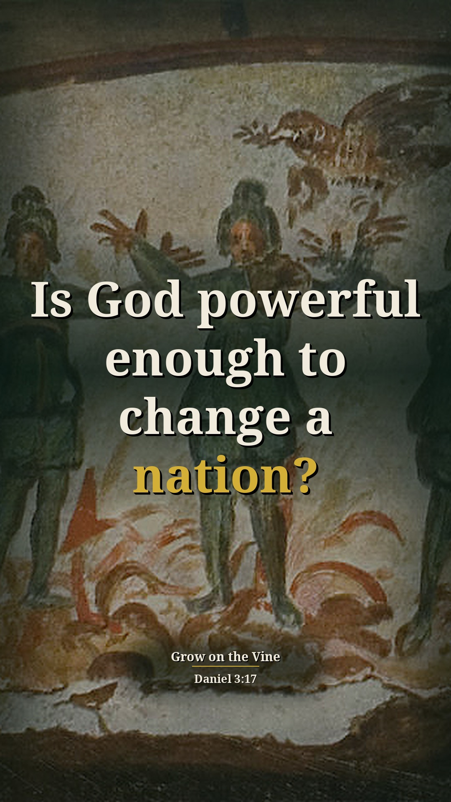
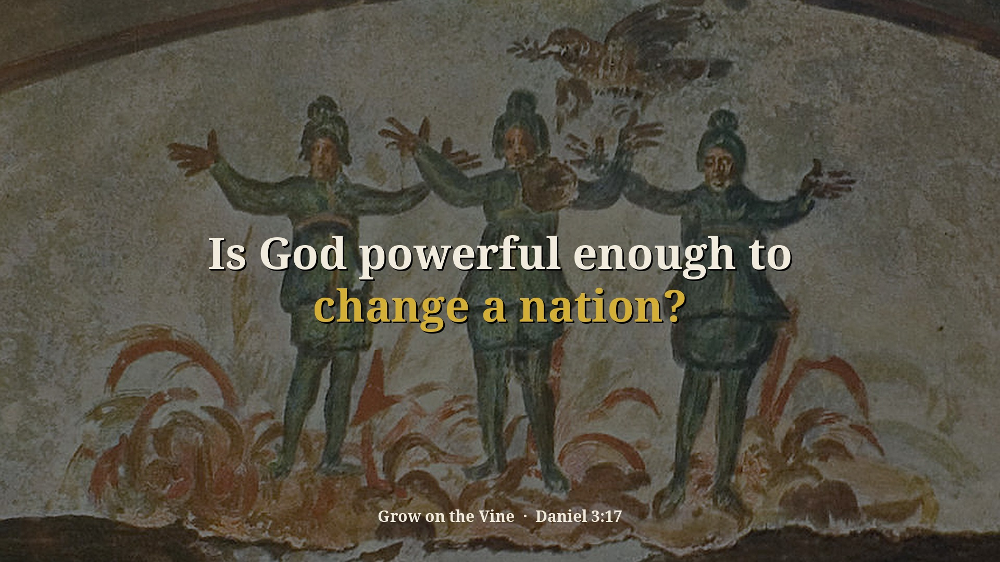
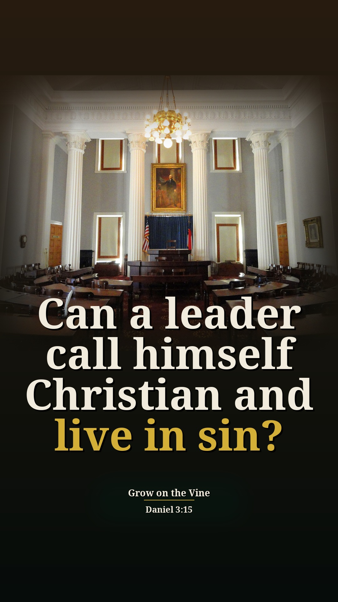
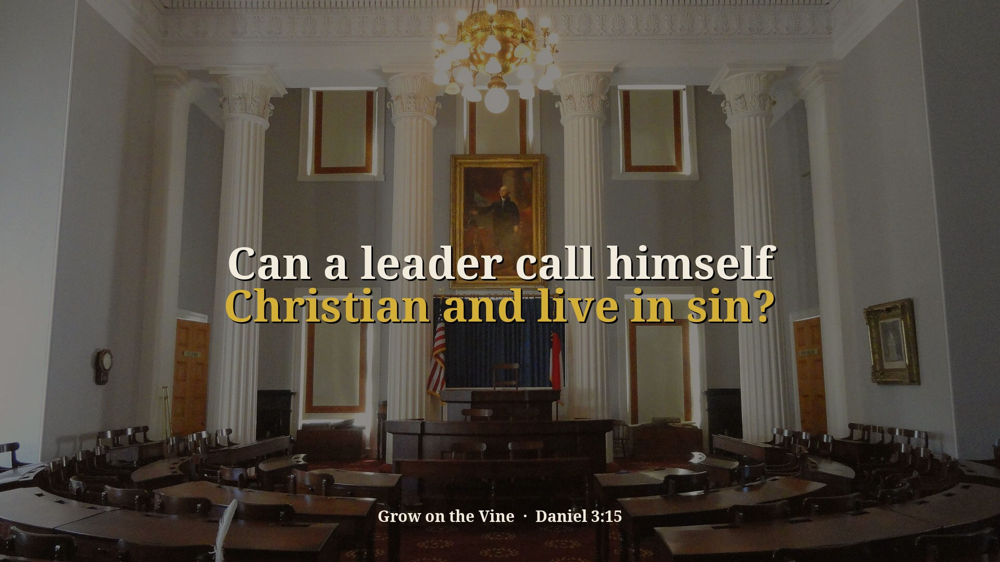
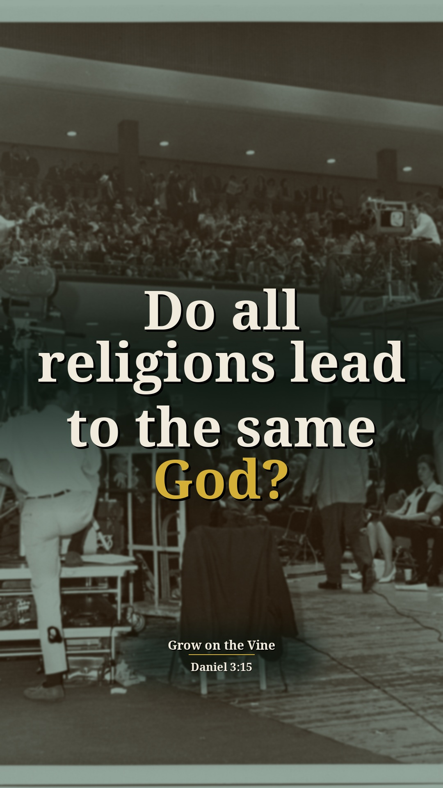
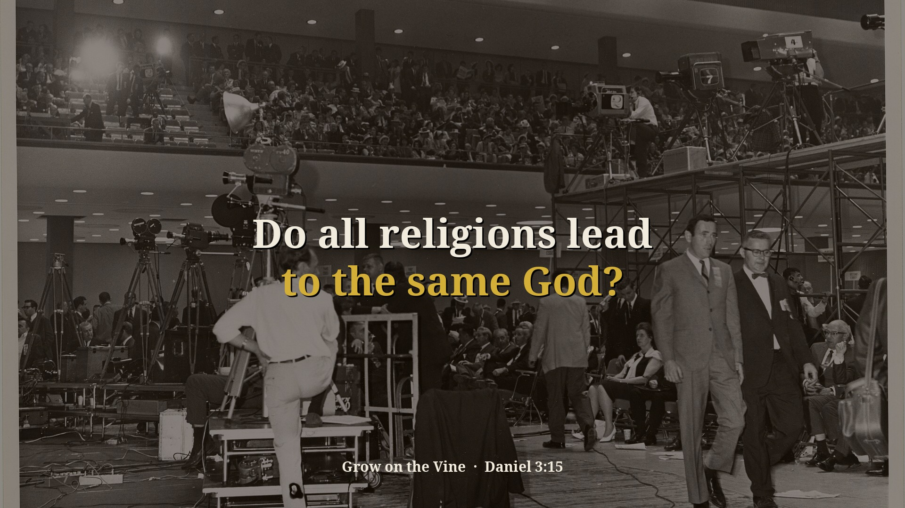
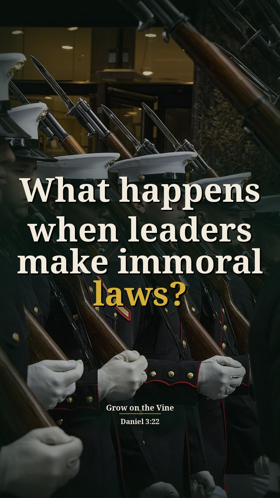
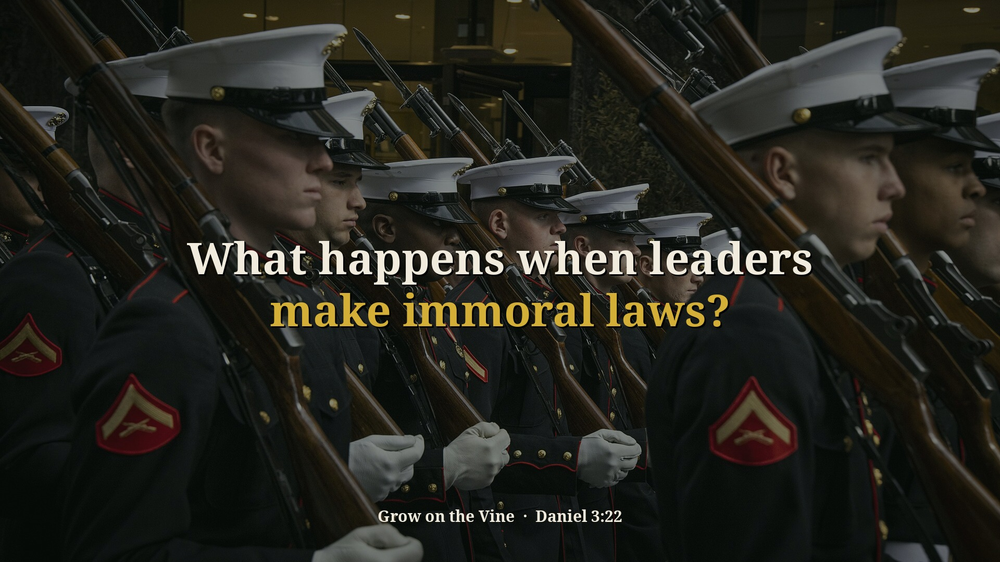

Civil Disobedience Part 1 (Daniel 3) — 4 new context Shorts (preview)
Preview only, not posted anywhere. Source: 7G8z7P7I4Qk · Pastor David G. Kincer. New Shorts from passages on sin and other religions that were skipped before. Each one includes the earlier or surrounding part of the sermon that explains why he says it. Each card follows the clip-page order: video → short answer → his words → Scripture (NKJV) → full message.
Is God powerful enough to change a nation?
Context included: 1:20–1:44 people saying America is in trouble and there's no hope, and "Daniel 3 tells us what to do." That is why he says a God who can't intervene would be worthless.
Watch the clip
Our short summary of this clip, not the preacher's exact words
Short answer: Yes. He says everyone tells him America and the church can't be changed, but if God can't change it, we're serving a worthless God, just like the Hindus and Buddhists serve a worthless god. The God he met over 40 years ago is still powerful and isn't measured by the crowd or circumstances.
Why: Daniel 3:17: our God whom we serve is able to deliver us.
“And I submit to you, Daniel 3 tells us what to do.”
▶ 1:40
“then we're serving a worthless God. Just like the Hindus are serving a worthless God, just like the Buddhists are serving a word.”
▶ 1:53
“The God I met 40ome years ago was a powerful God. And he's still powerful.”
▶ 2:15
Daniel 3:17 If that is the case, our God whom we serve is able to deliver us from the burning fiery furnace, and He will deliver us from your hand, O king.
Full sermon: Civil Disobedience Part 1 (Daniel 3) — full message page


Other title options:
- Is our God worthless?
- Is there any hope for America?
YouTube description (draft)
Is God powerful enough to change a nation? Read the short answer, the Scripture (NKJV) and the pastor's own words: https://growonthevine.com/clips/is-our-god-a-worthless-god/ To see the full message, click here: https://www.youtube.com/watch?v=7G8z7P7I4Qk&t=79s Yes. He says everyone tells him America and the church can't be changed, but if God can't change it, we're serving a worthless God, just like the Hindus and Buddhists serve a worthless god. The God he met over 40 years ago is still powerful and isn't measured by the crowd or circumstances. Daniel 3:17 (NKJV) Pastor David G. Kincer · Grow on the Vine Music: "Simple Duet" Kevin MacLeod (incompetech.com) Licensed under Creative Commons: By Attribution 4.0 License http://creativecommons.org/licenses/by/4.0/ #Shorts #Bible #Jesus
Can a leader call himself Christian and live in sin?
Context included: 15:31–15:50 Nebuchadnezzar's arrogant statement (Dan 3:15) after already admitting the God of Daniel is God of gods. He compares that to leaders today who say they are Christians.
Watch the clip
Our short summary of this clip, not the preacher's exact words
Short answer: He says like Nebuchadnezzar, who admitted Daniel's God yet defied Him, presidents say they are Christians, yet Clinton committed adultery with various women, including interns, and said "My religion forgives me." Protestants protested penance excusing people from living right, then embraced the very thing they protested.
Why: Daniel 3:15: the king who had acknowledged God still said, "who is the god who will deliver you from my hands?"
“Now this is after he's already acknowledged the God of Daniel, Shadrach, and Bes in chapter 2.”
▶ 15:31
“And yet Clinton could commit adultery with a various number of women, including young interns in the Capitol building and say this statement, "My religion forgives me."”
▶ 16:01
“Protestants mean protesters. And then we embraced the very thing that we protested.”
▶ 16:49
Daniel 3:15 Now if you are ready at the time you hear the sound of the horn, flute, harp, lyre, and psaltery, in symphony with all kinds of music, and you fall down and worship the image which I have made, good! But if you do not worship, you shall be cast immediately into the midst of a burning fiery furnace. And who is the god who will deliver you from my hands?”
Full sermon: Civil Disobedience Part 1 (Daniel 3) — full message page


Other title options:
- Does religion excuse sin?
- Why did the Protestants protest?
YouTube description (draft)
Can a leader call himself Christian and live in sin? Read the short answer, the Scripture (NKJV) and the pastor's own words: https://growonthevine.com/clips/can-a-leader-call-himself-christian-and-live-in-sin/ To see the full message, click here: https://www.youtube.com/watch?v=7G8z7P7I4Qk&t=930s He says like Nebuchadnezzar, who admitted Daniel's God yet defied Him, presidents say they are Christians, yet Clinton committed adultery with various women, including interns, and said "My religion forgives me." Protestants protested penance excusing people from living right, then embraced the very thing they protested. Daniel 3:15 (NKJV) Pastor David G. Kincer · Grow on the Vine Music: "Stoic Morning" Kevin MacLeod (incompetech.com) Licensed under Creative Commons: By Attribution 4.0 License http://creativecommons.org/licenses/by/4.0/ #Shorts #Bible #Jesus
Do all religions lead to the same God?
Context included: 15:40–15:50 Nebuchadnezzar had admitted their God is God of gods and does what no other god can do, merged in front of 16:56 so the comparison is clear: leaders who know of God still deny Him.
Watch the clip
Our short summary of this clip, not the preacher's exact words
Short answer: No. He says President Bush was asked if all religions lead to the same God and said yes, that unbelievers, atheists and Muslims go to heaven, and that the Bible is probably not literal. He asks what Christianity that is, because God doesn't write a book of lies.
Why: Like Nebuchadnezzar, who admitted God yet defied Him (Daniel 3:15), leaders claim Christ but deny His Word.
“He's admitted that their God is the God of gods.”
▶ 15:40
“"Do all religions lead to the same God?" Yes, they do.”
▶ 17:08
“He says, the guy says, "Do unbelievers, atheists, and Muslims go to heaven?" He says, "I believe they do."”
▶ 17:19
“God writes a book that's lies. What kind of Christianity do we have?”
▶ 17:56
Daniel 3:15 Now if you are ready at the time you hear the sound of the horn, flute, harp, lyre, and psaltery, in symphony with all kinds of music, and you fall down and worship the image which I have made, good! But if you do not worship, you shall be cast immediately into the midst of a burning fiery furnace. And who is the god who will deliver you from my hands?”
John 14:6 Jesus said to him, “I am the way, the truth, and the life. No one comes to the Father except through Me.
Full sermon: Civil Disobedience Part 1 (Daniel 3) — full message page


Other title options:
- Is the Bible literal?
- What picture of Christianity do leaders give?
YouTube description (draft)
Do all religions lead to the same God? Read the short answer, the Scripture (NKJV) and the pastor's own words: https://growonthevine.com/clips/do-all-religions-lead-to-the-same-god/ To see the full message, click here: https://www.youtube.com/watch?v=7G8z7P7I4Qk&t=940s No. He says President Bush was asked if all religions lead to the same God and said yes, that unbelievers, atheists and Muslims go to heaven, and that the Bible is probably not literal. He asks what Christianity that is, because God doesn't write a book of lies. Daniel 3:15 (NKJV) Pastor David G. Kincer · Grow on the Vine Music: "Vision Of Persistence" Kevin MacLeod (incompetech.com) Licensed under Creative Commons: By Attribution 4.0 License http://creativecommons.org/licenses/by/4.0/ #Shorts #Bible #Jesus
What happens when leaders make immoral laws?
Context included: 27:56 Daniel 3:22, the flame killed the men who carried out the king's order, is the verse he is applying: people die following leaders who make immoral laws.
Watch the clip
Our short summary of this clip, not the preacher's exact words
Short answer: He says the flame killed the men who carried out the king's order, and people still die following leaders: Germans under Hitler, Americans in Vietnam, and now government promotes and forces homosexuality as an acceptable lifestyle and marriage, with half a million dead and 50% of Americans with an STD. Religious leaders promise health and wealth, and say join our group and you can shack up, smoke marijuana and get drunk.
Why: Daniel 3:22: the fire killed the men who obeyed the king's order.
“The flame of fire slew those men that took up Shadrach, Meshak, and Abednego.”
▶ 27:56
“Civil government, civil servants promotes and forces homosexuality on the nation as an acceptable lifestyle and marriage.”
▶ 28:21
“50% of Americans have had or have now a sexually transmitted disease trying to live the sexual revolution idea”
▶ 28:42
“You believe our way and you can go to heaven and you can shack up with many people as you want.”
▶ 29:57
“Thousands of people are dying following leaders that make immoral laws, whether it's in the church or in society.”
▶ 30:23
Daniel 3:22 Therefore, because the king’s command was urgent, and the furnace exceedingly hot, the flame of the fire killed those men who took up Shadrach, Meshach, and Abed-Nego.
Full sermon: Civil Disobedience Part 1 (Daniel 3) — full message page


Other title options:
- Why are so many following the wrong leaders?
- Does a nation pay for sin?
YouTube description (draft)
What happens when leaders make immoral laws? Read the short answer, the Scripture (NKJV) and the pastor's own words: https://growonthevine.com/clips/what-happens-when-leaders-make-immoral-laws/ To see the full message, click here: https://www.youtube.com/watch?v=7G8z7P7I4Qk&t=1676s He says the flame killed the men who carried out the king's order, and people still die following leaders: Germans under Hitler, Americans in Vietnam, and now government promotes and forces homosexuality as an acceptable lifestyle and marriage, with half a million dead and 50% of Americans with an STD. Religious leaders promise health and wealth, and say join our group and you can shack up, smoke marijuana and get drunk. Daniel 3:22 (NKJV) Pastor David G. Kincer · Grow on the Vine Music: "Inspired" Kevin MacLeod (incompetech.com) Licensed under Creative Commons: By Attribution 4.0 License http://creativecommons.org/licenses/by/4.0/ #Shorts #Bible #Jesus